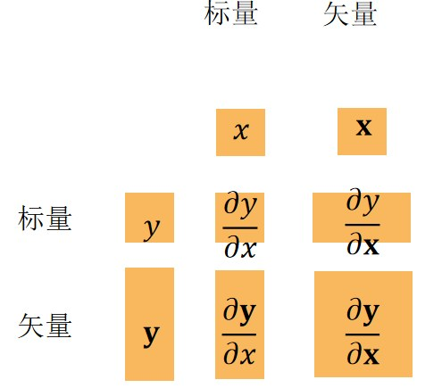
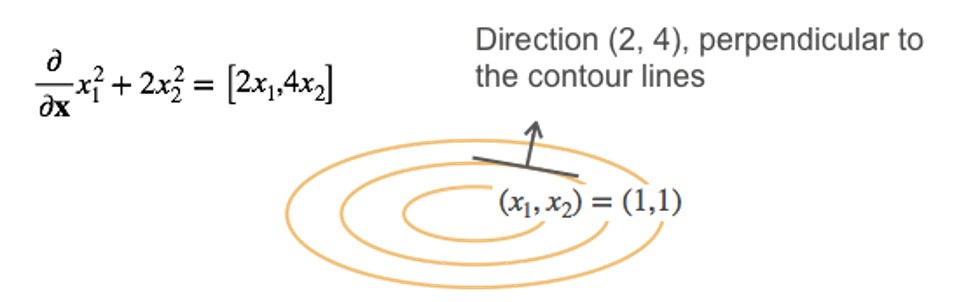
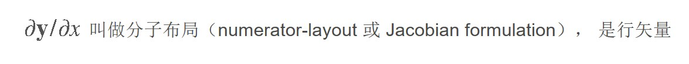
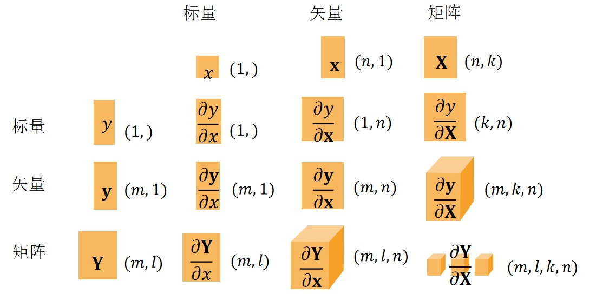

深度学习的所有计算——从一次房价预测到千亿参数的大模型——最终都可以归结为标量、向量、矩阵之间的运算。本节用最短路径复习这些数学对象，并重点关注它们在深度学习中的实际含义。
标量（scalar）就是单独的一个数，例如学习率 \(0.01\)、某张图片的类别标签 \(3\)、某次训练的损失值 \(0.25\)。标量之间可以进行加减乘除、指数、对数等简单运算。
在深度学习代码里，标量通常对应一个 float 或 int，或者一个"0 维张量"。判断一个量是不是标量，只需问一句：它有没有"方向"或"下标"？没有，就是标量。
向量（vector）是把若干标量排成一列（或一行）得到的对象：
\[\mathbf{x} = \begin{bmatrix} x_1 \\ x_2 \\ \vdots \\ x_n \end{bmatrix}, \qquad \mathbf{x} + \mathbf{y} = \begin{bmatrix} x_1 + y_1 \\ x_2 + y_2 \\ \vdots \\ x_n + y_n \end{bmatrix}, \qquad c\,\mathbf{x} = \begin{bmatrix} c\,x_1 \\ c\,x_2 \\ \vdots \\ c\,x_n \end{bmatrix}\]
向量的加法和数乘都是逐元素进行的。在深度学习中，一个样本的特征（卧室数、卫浴数、面积）就是一个向量；一个模型的全部参数也可以拉直成一个很长的向量。
范数（norm）用来度量向量的大小。最常用的是 \(L^p\) 范数：
\[\|\mathbf{x}\|_p = \left( \sum_{i=1}^{n} |x_i|^p \right)^{1/p}\]
| 范数 | 定义 | 深度学习中的典型用途 |
|---|---|---|
| \(L^1\) 范数 | \(\|\mathbf{x}\|_1 = \sum_i |x_i|\) | L1 正则化，让权重变得稀疏（很多权重变成 0） |
| \(L^2\) 范数 | \(\|\mathbf{x}\|_2 = \sqrt{\sum_i x_i^2}\) | 欧氏距离；权重衰减（weight decay）惩罚的就是它 |
| \(L^\infty\) 范数 | \(\|\mathbf{x}\|_\infty = \max_i |x_i|\) | 衡量最大扰动，对抗样本研究中常用 |
为什么损失函数里要加"\(\lambda\) × 范数"？模型就是一大堆权重数字，训练就是调数字。只追例题分数，模型可能把例题背下来而不是学会方法；而背答案需要特别大的权重。于是立规矩：总分 = 答错的损失 + \(\lambda\) × 权重的大小——数字越大扣分越多，模型只能把权重调小，没能力背，只能学规律。量"一堆权重总体有多大"的尺子，就是范数。
| 范数 | 量法（w=(3,4)） | 生活类比 | 模型的反应 |
|---|---|---|---|
| \(L^1\) | 绝对值相加 = 7 | 沿街区走的总步数 | 没用的权重被清零（稀疏） |
| \(L^2\)（用平方） | \(\sqrt{9+16}\) = 5 | 直线距离（勾股定理） | 大权重被压小（weight decay） |
| \(L^\infty\) | 取最大 = 4 | 只关心最远那段路 | 每处改动都有上限（对抗样本） |
直接使用平方 \(L^2\) 范数 \(\|\mathbf{x}\|_2^2\)（不开根号）求导更干净——导数是 \(2\mathbf{x}\)，没有根号带来的繁琐项，所以损失函数里经常出现"平方 \(L^2\) 范数"。
两个等长向量的点积（dot product，也叫内积）定义为：
\[\langle \mathbf{w}, \mathbf{x} \rangle = \mathbf{w}^\top \mathbf{x} = \sum_{i=1}^{n} w_i x_i = \|\mathbf{w}\|\,\|\mathbf{x}\|\cos\theta\]
点积同时有两种读法：代数上它是对应元素相乘再求和；几何上它度量两个向量方向的接近程度——夹角 \(\theta\) 越小，点积越大。
正交（垂直）：点积为 0——当 \(\langle \mathbf{x}, \mathbf{y} \rangle = 0\) 时，称向量 \(\mathbf{x}\) 与 \(\mathbf{y}\) 正交。这是后面理解正交矩阵、特征向量分解的基础。
线性模型 \(\hat{y} = \langle \mathbf{w}, \mathbf{x} \rangle + b\) 就是一次点积加一个偏置。看懂了点积，就看懂了神经网络的"半个身子"。
矩阵（matrix）是把数按行、列排成的矩形阵列：
\[\mathbf{A} = \begin{bmatrix} a_{11} & a_{12} & \cdots & a_{1n} \\ a_{21} & a_{22} & \cdots & a_{2n} \\ \vdots & \vdots & \ddots & \vdots \\ a_{m1} & a_{m2} & \cdots & a_{mn} \end{bmatrix} \in \mathbb{R}^{m \times n}\]
矩阵的加法和数乘同样是逐元素的。可以把矩阵想成"一批样本的特征表"：每一行是一个样本，每一列是一个特征。
类比 Excel 表格：整张表就是一个矩阵，每一行是一条记录，每一列是一个字段——深度学习中"行 = 样本、列 = 特征"的约定正来源于此。
矩阵 × 向量：结果是一个向量，其每个元素是矩阵对应行与向量的点积：
\[\mathbf{A}\mathbf{x} = \begin{bmatrix} \text{— } \mathbf{a}_{1}^{\top} \text{—} \\ \text{— } \mathbf{a}_{2}^{\top} \text{—} \\ \vdots \\ \text{— } \mathbf{a}_{m}^{\top} \text{—} \end{bmatrix} \mathbf{x} = \begin{bmatrix} \mathbf{a}_{1}^{\top}\mathbf{x} \\ \mathbf{a}_{2}^{\top}\mathbf{x} \\ \vdots \\ \mathbf{a}_{m}^{\top}\mathbf{x} \end{bmatrix}\]
矩阵 × 矩阵：\(\mathbf{C} = \mathbf{A}\mathbf{B}\)，其中 \(c_{ij}\) 是 \(\mathbf{A}\) 的第 \(i\) 行与 \(\mathbf{B}\) 的第 \(j\) 列的点积。注意矩阵乘法一般不满足交换律：\(\mathbf{A}\mathbf{B} \neq \mathbf{B}\mathbf{A}\)。
一个全连接层做的事就是 \(\mathbf{h} = \sigma(\mathbf{W}\mathbf{x} + \mathbf{b})\)：权重矩阵 \(\mathbf{W}\) 乘输入向量 \(\mathbf{x}\)，再加偏置、过激活函数。训练时一次性送入一个批量（batch）的样本，就是一次矩阵 × 矩阵。可以说，深度学习工程的本质，就是把一切都组织成高效的矩阵乘法。
看个具体算例：\(\mathbf{A} = \begin{bmatrix} 1 & 2 \\ 3 & 4 \end{bmatrix}\)，\(\mathbf{B} = \begin{bmatrix} 5 & 6 \\ 7 & 8 \end{bmatrix}\)，则 \(\mathbf{C} = \mathbf{A}\mathbf{B} = \begin{bmatrix} 19 & 22 \\ 43 & 50 \end{bmatrix}\)——每个元素都是"对应相乘再相加"，如 \(c_{11} = 1\times5 + 2\times7 = 19\)。
矩阵最常用的是 Frobenius 范数——把矩阵拉直成向量后取 \(L^2\) 范数：
\[\|\mathbf{A}\|_F = \sqrt{\sum_{i=1}^{m}\sum_{j=1}^{n} a_{ij}^2}\]
它衡量矩阵"整体有多大"。对权重矩阵做 Frobenius 范数惩罚，就是多层网络版本的权重衰减。
算例：\(\mathbf{A} = \begin{bmatrix} 1 & 2 \\ 3 & 4 \end{bmatrix}\)，则 \(\|\mathbf{A}\|_F = \sqrt{1+4+9+16} = \sqrt{30} \approx 5.48\)。配合 1.3 节的正则化直觉：训练总分 = 损失 + \(\lambda\|\mathbf{W}\|_F^2\)，范数项会压着权重不要长得太大。
对于一个给定的线性变换 \(\mathbf{A}\)，如果某个非零向量 \(\mathbf{v}\) 经过变换后仍然停留在原来的直线上，只是长度或方向被缩放，那么 \(\mathbf{v}\) 就是 \(\mathbf{A}\) 的特征向量，缩放倍数 \(\lambda\) 就是对应的特征值：
\[\mathbf{A}\mathbf{v} = \lambda \mathbf{v}\]
几何直觉：\(\lambda > 1\) 拉伸、\(0 < \lambda < 1\) 压缩、\(\lambda < 0\) 反向。最简单的例子是 \(\mathbf{A} = \mathrm{diag}(2, 3)\)：坐标轴方向不变（它们就是特征向量），只把横轴拉长 2 倍、纵轴拉长 3 倍——特征值正是 2 和 3。
特征向量是变换 \(\mathbf{A}\) 的"主轴方向"——沿着这些方向，变换只拉伸不旋转。对称矩阵总有一组两两正交的实特征向量和实特征值，这是为什么协方差矩阵（对称）可以被特征分解、PCA 才能成立。
| 类型 | 定义 | 要点与用途 |
|---|---|---|
| 单位矩阵 | 主对角线全为 1、其余为 0，记作 \(\mathbf{I}\) | 矩阵中的"1"：\(\mathbf{A}\mathbf{I} = \mathbf{I}\mathbf{A} = \mathbf{A}\) |
| 对角矩阵 | 只有主对角线上可能有非零元素 | 乘上它相当于对各坐标轴分别缩放；特征值就是对角元 |
| 对称矩阵 | \(\mathbf{A} = \mathbf{A}^\top\) | 协方差矩阵、Hessian 矩阵；总可特征分解 |
| 正定矩阵 | 对任意 \(\mathbf{x} \neq 0\) 有 \(\mathbf{x}^\top \mathbf{A}\mathbf{x} > 0\) | 特征值均为正（半正定则非负）；二次型损失为碗状，有唯一最小值 |
| 正交矩阵 | 所有列（行）向量都是单位正交向量，即 \(\mathbf{Q}^\top\mathbf{Q} = \mathbf{I}\) | 逆就是转置：\(\mathbf{Q}^{-1} = \mathbf{Q}^\top\)；保持长度和角度不变，不破坏数据的尺度 |
| 置换矩阵 | 每行每列恰好只有一个 1，其余为 0 | 乘上它相当于重新排列向量元素；正交矩阵的特例 |
"对称"不等于"正定"。对称矩阵的特征值可正可负；只有特征值全部为正时才叫正定。判断二次型损失有没有唯一最小值，看的就是 Hessian 矩阵是否正定。
CPU 擅长处理复杂的串行逻辑，但核心数量有限；GPU 则为图形渲染而生，内部有成千上万个简单计算核心，可以同时对大量数据执行同一种运算。矩阵乘法恰好是"同一运算、海量数据"的完美代表：计算 \(\mathbf{C} = \mathbf{A}\mathbf{B}\) 的每个元素 \(c_{ij}\) 都互不依赖，可以分派给不同核心并行完成。

要计算线性模型 \(\hat{y} = \mathbf{w}^\top\mathbf{x} + b\)（\(\mathbf{w}\) 和 \(\mathbf{x}\) 都是 \(n\) 维列向量），有两种写法：
z = 0 # 累加器清零，准备累加各分量的乘积
for i in range(n): # 逐个访问全部 n 个分量（Python 解释器逐行执行，慢）
z += w[i] * x[i] # 取第 i 对分量相乘，累加进 z
z += b # 最后加上偏置 b，得到 z = w·x + b
z = np.dot(w, x) + b # np.dot 一次性算完整个点积（底层 C 库并行），再加偏置 b——结果相同，快几十到上百倍
for 循环版本逐个访问 w[i] 和 x[i]，Python 解释器每轮都要做类型检查和索引计算，\(n\) 很大时非常慢；而 np.dot 把整个计算交给底层 C/Fortran 库一次性完成，在 GPU 上还可以进一步并行。同样的数学结果，速度常常相差几十到上百倍。
写深度学习代码时，看到 for 循环遍历数据就要警惕——先想想能否改写成矩阵/向量运算（向量化），让 NumPy 或 PyTorch 帮你并行。
深度学习框架把所有数据统一表示为张量（tensor）——可以把张量理解为"任意维度的数组"。不同维度的张量对应不同的数据形态：
| 维度 | 数学对象 | 示例 | 深度学习中对应 |
|---|---|---|---|
| 0 维 | 标量 | 1.0 | 一个类别标签、一个损失值 |
| 1 维 | 向量 | [1.0, 2.7, 3.4] | 一个样本的特征向量 |
| 2 维 | 矩阵 | [[1.0, 2.7, 3.4], [5.0, 0.2, 4.6]] | 一批样本的特征矩阵（样本数 × 特征数） |
| 3 维 | 张量 | 形状（高 × 宽 × 通道） | 一张 RGB 图像 |
| 4 维 | 张量 | 形状（批量 × 高 × 宽 × 通道） | 一批 RGB 图像 |
| 5 维 | 张量 | 形状（批量 × 时间 × 高 × 宽 × 通道） | 一批 RGB 视频 |
"批量维度"几乎总是张量的第 0 维。注意 PyTorch 的图像张量采用 NCHW 顺序（批量 × 通道 × 高 × 宽）：看到形状 (32, 3, 224, 224)，要立刻读出：32 张图片，每张 3 通道、224×224 像素。上表按"高 × 宽 × 通道"（NHWC，TensorFlow 惯例）书写是为了便于从图像直觉理解，两种顺序只是通道维摆放位置不同。
Python 原生类型与 PyTorch 张量的对应关系如下：

进一步地，每种张量还区分数值精度（dtype）与所在设备（CPU / GPU）：

两个张量运算前，要确认它们的 dtype 一致、设备一致。一个张量在 CPU、另一个在 GPU 会直接报错；标签张量该用 torch.long 而不是 float。
神经网络的训练过程每一步都依赖求导运算。回顾一元函数的求导：导数即函数曲线在某点处切线的斜率。例如 \(f(x) = x^2\) 的导数 \(\frac{df}{dx} = 2x\)，在 \(x = 1\) 处斜率为 2。

常用求导规则一览：
| 规则 | 公式 |
|---|---|
| 幂函数 | \(\frac{d}{dx} x^n = n x^{n-1}\) |
| 和/差 | \(\frac{d}{dx}(u \pm v) = \frac{du}{dx} \pm \frac{dv}{dx}\) |
| 乘积 | \(\frac{d}{dx}(uv) = \frac{du}{dx}v + u\frac{dv}{dx}\) |
| 商 | \(\frac{d}{dx}\frac{u}{v} = \frac{\frac{du}{dx}v - u\frac{dv}{dx}}{v^2}\) |
| 三角/指数/对数 | \((\sin x)' = \cos x\)，\((\exp x)' = \exp x\)，\((\log x)' = \frac{1}{x}\) |
| 链式法则 | \(y=f(u),\ u=g(x) \Rightarrow \frac{dy}{dx} = \frac{dy}{du}\cdot\frac{du}{dx}\) |
首先看四种组合的全局结构：\(y\) 与 \(\mathbf{x}\) 各为标量或向量，四种组合对应导数的四种形状——标量、向量、矩阵：

当函数的自变量从标量扩展为向量时，导数也相应升级为梯度（gradient）：多元函数 \(y = f(\mathbf{x})\) 对每个分量求偏导，按序排成与 \(\mathbf{x}\) 同形的列向量即为梯度——它完整刻画了函数对每个自变量的敏感程度：
\[\mathbf{x} = \begin{bmatrix} x_1 \\ x_2 \\ \vdots \\ x_n \end{bmatrix}, \qquad \frac{\partial y}{\partial \mathbf{x}} = \begin{bmatrix} \dfrac{\partial y}{\partial x_1} \\[6pt] \dfrac{\partial y}{\partial x_2} \\[6pt] \vdots \\[2pt] \dfrac{\partial y}{\partial x_n} \end{bmatrix}\]
例：\(f = x_1^2 + 2x_2^2\)，则 \(\frac{\partial f}{\partial \mathbf{x}} = [2x_1,\ 4x_2]^\top\)，在 \((3,2)\) 处为 \([6, 8]^\top\)。梯度与等高线垂直、指向上升最陡的方向，因此梯度下降沿负梯度方向迭代：\(\mathbf{w} \leftarrow \mathbf{w} - \eta\,\nabla f\)。
与 1.3 节的联系：正则化惩罚项 \(\lambda\|\mathbf{w}\|^2\) 的梯度为 \(2\lambda\mathbf{w}\)——梯度下降每轮减去该项，即在数学上实现了权重衰减将权重向 0 收缩的效果。

左下格对应的情形：当 \(\mathbf{y}\) 为含 \(m\) 个分量的向量、\(x\) 为标量时，\(\mathbf{y}\) 的每个分量分别对 \(x\) 求导；按分母布局（结果形状为"分母维度 × 分子维度"），所得 \(m\) 个结果排成一行，即 \(1 \times m\) 的行向量。而当双方均为向量时，\(m \times n\) 个偏导数按行排列或按列排列，文献中存在两种约定：
| 布局约定 | 含义 |
|---|---|
| 分子布局（numerator-layout，Jacobian 形式） | 导数的形状跟随分子，标量对向量求导得到行向量 |
| 分母布局（denominator-layout，Hessian 形式） | 导数的形状跟随分母，标量对向量求导得到列向量 |

两种布局仅是排列方式不同，数值完全一致、互为转置。《动手学深度学习》教材采用分母布局（梯度为列向量），本讲义与教材保持一致。同一份材料中必须统一采用同一种约定——混用将相差一个转置，导致结果错误。实用建议：使用每个公式前确认其结果为列向量还是行向量即可。
以 \(y = x_1^2 + 2x_2^2\) 为例：两个偏导数分别为 \(2x_1\) 与 \(4x_2\)，同一对数字在两种布局下的排列结果对比：
方式 A · 分子布局（Jacobian 形式）
\[\frac{\partial y}{\partial \mathbf{x}} = [\,2x_1\ \ \ 4x_2\,] \quad (1 \times 2)\]
行数由分子 \(y\) 决定：偏导按行排开，得行向量。部分文献采用。
方式 B · 分母布局（梯度 / Hessian 形式）✅ 本课程采用
\[\frac{\partial y}{\partial \mathbf{x}} = \begin{bmatrix} 2x_1 \\[4pt] 4x_2 \end{bmatrix} \quad (2 \times 1)\]
行数由分母 \(\mathbf{x}\) 决定：偏导按列排成列向量，与 \(\mathbf{w}\) 同形，更新式两端形状自然对齐。
两种方式数值完全相同、互为转置；排列方式决定后续矩阵乘法能否进行及结果的形状。
当 \(\mathbf{y}\) 与 \(\mathbf{x}\) 均为向量时，导数构成矩阵——雅可比矩阵。按分母布局其形状为 \(n \times m\)：第 \(j\) 行第 \(i\) 列的元素为 \(\partial y_i / \partial x_j\)，\(m \times n\) 种组合无一遗漏。记忆要点：行对应分母 \(\mathbf{x}\)，列对应分子 \(\mathbf{y}\)。
\[\frac{\partial \mathbf{y}}{\partial \mathbf{x}} = \begin{bmatrix} \dfrac{\partial y_1}{\partial x_1} & \dfrac{\partial y_2}{\partial x_1} & \cdots & \dfrac{\partial y_m}{\partial x_1} \\[8pt] \dfrac{\partial y_1}{\partial x_2} & \dfrac{\partial y_2}{\partial x_2} & \cdots & \dfrac{\partial y_m}{\partial x_2} \\[8pt] \vdots & \vdots & \ddots & \vdots \\[4pt] \dfrac{\partial y_1}{\partial x_n} & \dfrac{\partial y_2}{\partial x_n} & \cdots & \dfrac{\partial y_m}{\partial x_n} \end{bmatrix} \in \mathbb{R}^{n \times m}\]
构造：将每个 \(y_i\) 对 \(\mathbf{x}\) 的梯度（列向量）各占一列、并排即成。梯度（5.2）相当于 \(m=1\) 时的一列，"向量对标量"（5.3）相当于 \(n=1\) 时的一行；反向传播在层间传递的正是这一矩阵。
将四种组合中最常用的求导结果汇总为两张速查表（分母布局），可直接查表使用（\(\mathbf{a}\)、\(\mathbf{A}\) 与标量 \(a\) 均不是 \(\mathbf{x}\) 的函数）：
| 表一（基本式） | 表二（复合式） | ||
|---|---|---|---|
| \(y=\mathbf{a}\) | \(\mathbf{0}\) | \(a\mathbf{u}\) | \(a\,\partial\mathbf{u}/\partial\mathbf{x}\) |
| \(y=\mathbf{x}\) | \(\mathbf{I}\) | \(\mathbf{A}\mathbf{u}\) | \((\partial\mathbf{u}/\partial\mathbf{x})\,\mathbf{A}^\top\) |
| \(y=\mathbf{A}\mathbf{x}\) | \(\mathbf{A}^\top\) | \(\mathbf{u}+\mathbf{v}\) | \(\partial\mathbf{u}/\partial\mathbf{x}+\partial\mathbf{v}/\partial\mathbf{x}\) |
| \(y=\mathbf{x}^\top\mathbf{A}\) | \(\mathbf{A}\) | \(\mathbf{u},\mathbf{v}\) 为 \(\mathbf{x}\) 的函数 | |
数字验证：\(\mathbf{A}=\begin{bmatrix} 1 & 2 \\ 3 & 4 \end{bmatrix}\) 时，\(\mathbf{A}\mathbf{x}\) 的导数为 \(\mathbf{A}^\top=\begin{bmatrix} 1 & 3 \\ 2 & 4 \end{bmatrix}\)（各分量梯度逐列排列）；\(\mathbf{x}^\top\mathbf{A}=[\,x_1+3x_2,\ 2x_1+4x_2\,]\) 的导数恰好还原为 \(\mathbf{A}\)。

复合函数的求导遵循链式法则，它是整个反向传播的数学基础：
\[\text{标量：}\; y=f(u),\; u=g(x) \;\Rightarrow\; \frac{dy}{dx} = \frac{dy}{du}\cdot\frac{du}{dx} \qquad\qquad \text{向量：}\; \frac{\partial y}{\partial \mathbf{x}} = \underbrace{\frac{\partial \mathbf{u}}{\partial \mathbf{x}}}_{(n,k)} \underbrace{\frac{\partial y}{\partial \mathbf{u}}}_{(k,1)}\]
向量形式中，每个因子均为 5.4 节的雅可比矩阵，按矩阵乘法依次相乘、相邻形状必须匹配。神经网络是由各层逐层复合而成的深层函数 \(f^{(L)} \circ \cdots \circ f^{(2)} \circ f^{(1)}\)，链式法则使我们能够将"损失对第一层参数的导数"分解为一系列简单导数的乘积 \(\frac{\partial f^{(2)}}{\partial f^{(1)}} \cdot \frac{\partial f^{(3)}}{\partial f^{(2)}} \cdots \frac{\partial f^{(L)}}{\partial f^{(L-1)}}\)。
从输出端出发将导数逐层向前传递，每经过一层便一并算出该层权重的梯度，并共享中间结果——求导代价从指数级降至与正向传播同量级。链式法则的高效实现支撑了整个训练流程。
| 场景 | 结果形状 | 说明 |
|---|---|---|
| 标量 \(y\) 对向量 \(\mathbf{x}\) | 列向量（与 \(\mathbf{x}\) 同形） | 梯度——参数更新的依据 |
| 向量 \(\mathbf{y}\) 对向量 \(\mathbf{x}\) | \(n \times m\) 矩阵 | 雅可比矩阵——反向传播在层间传递的对象 |
| 分母布局 | 行数由分母 \(\mathbf{x}\) 决定 | 教材与本课程采用，梯度与 \(\mathbf{x}\) 同形 |
| 分子布局 | 行数由分子 \(\mathbf{y}\) 决定 | 部分文献采用，阅读时注意区分 |
课后思考：手算 \(\partial(\mathbf{x}^\top\mathbf{A}\mathbf{x})/\partial\mathbf{x}\)；用公式表验证 \(\partial(\lambda\|\mathbf{w}\|^2)/\partial\mathbf{w} = 2\lambda\mathbf{w}\)（提示：将 \(\|\mathbf{w}\|^2\) 展开逐项求偏导，再套用常数倍规则）；找一份采用分子布局的资料，对比同一公式在两种布局下相差哪个转置。
| 方式 | 原理 | 优缺点 |
|---|---|---|
| 符号微分 | 像手算一样，对表达式做代数变换得到导数公式 | 精确，但表达式容易"爆炸"（越求导越长） |
| 数值微分 | 用定义近似：\(\frac{df}{dx} = \lim_{h\to0}\frac{f(x+h)-f(x)}{h}\)，取很小的 \(h\) 估算 | 简单通用，但有舍入误差，且每个参数要算两次函数值，代价高 |
| 自动微分（AD） | 把函数分解为基本算子，对每个基本算子套用符号微分规则，再代入数值沿链式法则组合 | 既精确又高效，是 PyTorch / TensorFlow 的核心引擎 |
自动微分不是数值近似，它的结果和手算一样精确；它也不是对整个表达式做符号推导，而是"分解 → 逐点求值 → 链式组合"。在 PyTorch 里，你只需调用一次 loss.backward()，背后跑的就是自动微分。
以单层网络的平方损失为例：
\[z = (\langle \mathbf{w}, \mathbf{x} \rangle - y)^2 \qquad \xrightarrow{\text{分解}} \qquad a = \langle \mathbf{w}, \mathbf{x} \rangle,\quad b = a - y,\quad z = b^2\]
把每一步基本运算画成节点、依赖关系画成有向边，就得到计算图（computational graph）——一张有向无环图（DAG）：

深度学习框架构建计算图的方式分两类：
| 方式 | 代表框架 | 特点 |
|---|---|---|
| 显式构造（静态图） | TensorFlow 1.x、Theano、MXNet（符号式） | 先完整定义计算图，再灌入数据执行；便于全局优化和部署 |
| 隐式构造（动态图） | PyTorch、MXNet（命令式） | 每执行一行代码就实时记录到图中；调试直观，可以配合 Python 控制流 |
本课程使用 PyTorch，其动态图风格如下：
import torch W_h = torch.randn(20, 20, requires_grad=True) # 隐状态权重；声明需要追踪梯度 W_x = torch.randn(20, 10, requires_grad=True) # 输入权重；同样需要追踪梯度 x = torch.randn(1, 10) # 输入向量（1×10） prev_h = torch.randn(1, 20) # 上一时刻的隐状态（1×20） h2h = torch.mm(W_h, prev_h.t()) # 矩阵乘：20x20 @ 20x1 → 隐状态带来的贡献 i2h = torch.mm(W_x, x.t()) # 矩阵乘：20x10 @ 10x1 → 当前输入带来的贡献 next_h = h2h + i2h # 两路贡献相加，得到未激活的隐状态 next_h = next_h.tanh() # 激活函数：压到 (-1, 1)，引入非线性 loss = next_h.sum() # 演示用的标量损失：所有元素求和 loss.backward() # 一键反向传播，计算所有梯度
requires_grad=True 告诉 PyTorch"请追踪以该张量为起点的所有运算"；执行运算时框架在后台悄悄把计算图搭好；调用 loss.backward() 后，W_h.grad 和 W_x.grad 里就存好了 \(\partial\,loss / \partial\,\mathbf{W}\)。
对计算图应用链式法则求 \(\frac{\partial z}{\partial \mathbf{w}}\)，可以从两头开始：
| 模式 | 计算方向 | 适用场景 |
|---|---|---|
| 正向模式（forward mode） | 从输入端开始：\(\frac{\partial a}{\partial \mathbf{w}} \to \frac{\partial b}{\partial \mathbf{w}} \to \frac{\partial z}{\partial \mathbf{w}}\) | 输入少、输出多时高效 |
| 反向模式（reverse mode，即反向传播） | 从输出端开始：\(\frac{\partial z}{\partial z} \to \frac{\partial z}{\partial b} \to \frac{\partial z}{\partial a} \to \frac{\partial z}{\partial \mathbf{w}}\) | 输出少、参数多时高效——这正是深度学习的情形（一个标量损失，上百万参数） |
仍以上一节的计算图为例，取 \(\mathbf{x} = (1, 2)\)、\(\mathbf{w} = (0.5, 0.5)\)、\(y = 1\)，先看前向数值，再看梯度如何"逆流而上"：

再看一个更小的例子 \(f = (a+b)\times c\)（取 a=2, b=3, c=4），下面这张动图把前向求值和梯度逆流的完整过程连起来演示：

把反向传播写成通用步骤：
- 前向传播：沿计算图逐节点求值，并缓存每个中间结果（反向时要用）。
- 初始化：从输出节点出发，令 \(\partial z / \partial z = 1\)。
- 逆向遍历：对每个节点读取上一步的梯度和缓存的中间值，乘以该节点的局部导数，把梯度传向它的输入。
- 到达参数节点：得到的梯度存入参数的 .grad，供优化器更新使用。
反向传播 = 链式法则 + 计算图 + 缓存中间值。它不是神秘的新算法，而是把复合函数求导组织得井井有条的工程实现。
| 主题 | 必须掌握的内容 |
|---|---|
| 向量与矩阵 | 逐元素运算、点积的几何意义、矩阵乘法的"行×列"规则、\(L^p\) / Frobenius 范数 |
| 特殊矩阵 | 对称矩阵可特征分解；正定 ↔ 特征值全正；正交矩阵 \(\mathbf{Q}^\top\mathbf{Q}=\mathbf{I}\) |
| 向量化 | GPU 并行矩阵运算；用 np.dot 代替 for 循环 |
| 张量 | 0~5 维张量与数据的对应关系；批量维度在第 0 维；dtype 与设备一致性 |
| 矩阵微积分 | 梯度 = 偏导列向量；分母布局约定（与教材一致）；雅可比矩阵；链式法则的向量形式 |
| 自动微分 | 三种微分方式的区别；计算图 DAG；PyTorch 动态图与 backward() |
| 反向传播 | 反向模式为何适合深度学习；逐步推演梯度 |
第 03 讲：深度神经网络（理论 2 学时）——从线性回归到 softmax 回归，从感知机到多层感知机，模型选择与正则化，以及正向/反向传播的完整实现。请带着本讲的向量与链式法则知识进入下一讲。